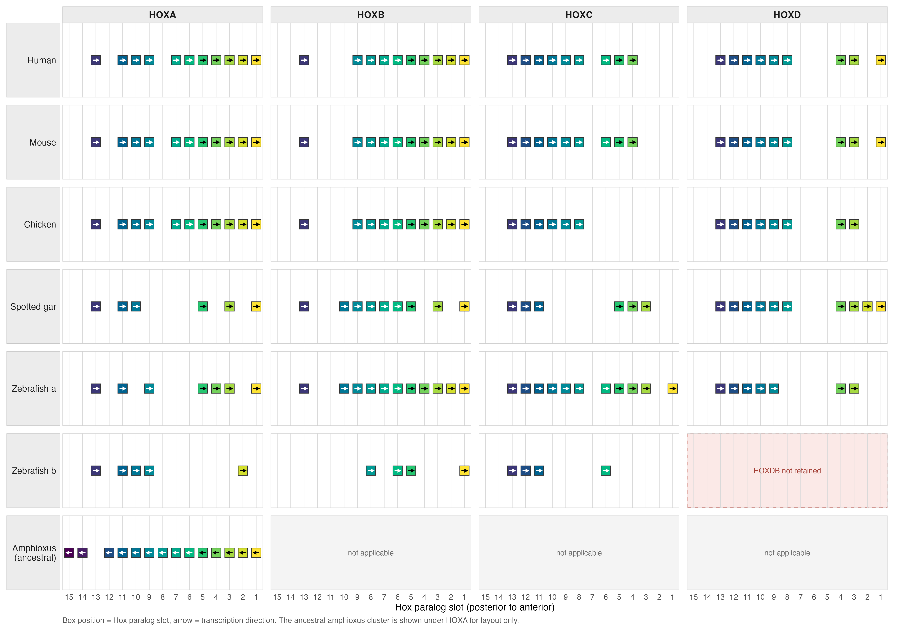
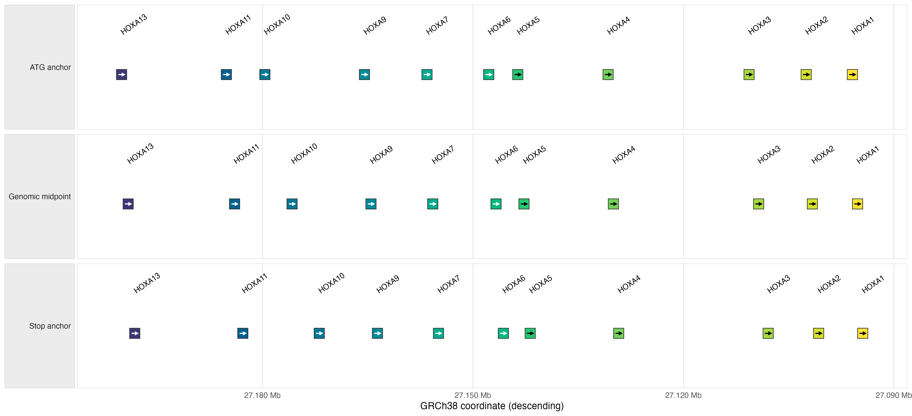

HOX Cluster Expansion Across Chordates
Source:vignettes/hox-cluster-expansion-demo.Rmd
hox-cluster-expansion-demo.RmdWhy a cluster matrix?
This example replaces the former HOXA ribbon tutorial with a view of HOX cluster expansion. Early vertebrate whole-genome duplications produced the four canonical gnathostome cluster families, HOXA through HOXD, and a later teleost duplication produced paired cluster copies followed by differential loss. The seven retained zebrafish clusters were an early line of evidence for that teleost duplication (Amores et al. 1998); genome-wide conserved synteny now resolves the earlier vertebrate duplications (Simakov et al. 2020).
The figure therefore uses columns, rather than nucleotide links, to
represent the duplication history. Human, mouse, chicken, and spotted
gar have one row each. Zebrafish has separate a and
b rows for its duplicated clusters. The invertebrate
chordate Branchiostoma lanceolatum (amphioxus) has one
ancestral cluster. To keep the matrix compact, that cluster is displayed
in the HOXA column as a layout anchor; this placement does not assign it
specifically to HOXA. Its HOXB–HOXD cells are structural blanks.
library(ggexon)
demo_dir <- system.file("extdata", "hox_cluster_expansion", package = "ggexon")
genes <- read.delim(file.path(demo_dir, "hox_genes.tsv"), check.names = FALSE)
panels <- read.delim(
file.path(demo_dir, "hox_clusters.tsv"),
check.names = FALSE,
na.strings = c("", "NA")
)
species <- read.delim(file.path(demo_dir, "hox_species.tsv"), check.names = FALSE)
annotation_gaps <- read.delim(
file.path(demo_dir, "hox_annotation_gaps.tsv"),
check.names = FALSE
)
row_levels <- c(
"human", "mouse", "chicken", "gar",
"zebrafish_a", "zebrafish_b", "amphioxus"
)
row_labels <- c(
human = "Human",
mouse = "Mouse",
chicken = "Chicken",
gar = "Spotted gar",
zebrafish_a = "Zebrafish a",
zebrafish_b = "Zebrafish b",
amphioxus = "Amphioxus\n(ancestral)"
)
column_levels <- c("A", "B", "C", "D")
column_labels <- c(
A = "HOXA",
B = "HOXB",
C = "HOXC",
D = "HOXD"
)
slot_order <- paste0("Hox", 15:1)
genes$species_row <- factor(genes$species_row, levels = row_levels)
genes$cluster_column <- factor(genes$cluster_column, levels = column_levels)
genes$track <- paste(genes$species_row, genes$cluster_column, sep = "::")
genes$slot <- factor(genes$slot, levels = slot_order)
genes$y <- 1
panels$species_row <- factor(panels$matrix_row, levels = row_levels)
panels$cluster_column <- factor(panels$matrix_column, levels = column_levels)Exact shared Hox slots
geom_genebox() uses a true square measured in
millimetres. Its internal arrow shows transcriptional direction, and
black or white is selected automatically to contrast with the fill. The
figure maps fill to Hox paralog number with an ordered,
color-vision-friendly viridis HCL palette. No large legend is needed
because the shared Hox15-to-Hox1 slot labels appear on every column
axis.
strip_scale_x(slot_order = ...) supplies a complete
synthetic comparison template. Each displayed gene’s selected coding
midpoint is mapped to its curated Hox-number slot, so genes assigned to
the same slot share one x coordinate across species and clusters.
Unoccupied template slots do not close up and do not by themselves imply
gene loss. This alignment is a visualization convention, not an inferred
one-to-one orthology relationship, particularly for posterior amphioxus
Hox genes. Box position therefore represents the curated Hox paralog
slot, while the internal arrow independently represents transcription
direction. The mapped BraLan2 amphioxus genes are all on the minus
strand, so their arrows point left even though their Hox-number slots
remain aligned with the vertebrate rows. If the template reverses a
cluster’s native genomic direction, the gene-box arrows are reversed
with it. Duplicated genes assigned to the same slot are stacked
vertically at that x coordinate.
active_panels <- panels[
panels$cell_status != "structural_blank",
c("species_row", "cluster_column")
]
slot_guides <- merge(
active_panels,
data.frame(xintercept = seq_along(slot_order)),
by = NULL,
all = TRUE
)
structural_panels <- panels[panels$cell_status == "structural_blank", ]
lost_panels <- panels[panels$cell_status == "cluster_not_retained", ]
hox_palette <- setNames(
grDevices::hcl.colors(length(slot_order), "viridis"),
slot_order
)
ggexon() +
geom_rect(
data = structural_panels,
xmin = -Inf,
xmax = Inf,
ymin = -Inf,
ymax = Inf,
inherit.aes = FALSE,
fill = "#F4F4F4",
colour = NA
) +
geom_rect(
data = lost_panels,
xmin = -Inf,
xmax = Inf,
ymin = -Inf,
ymax = Inf,
inherit.aes = FALSE,
fill = "#FBE9E7",
colour = "#C95F54",
linewidth = 0.35,
linetype = 2
) +
geom_vline(
data = slot_guides,
aes(xintercept = xintercept),
inherit.aes = FALSE,
colour = "#D9D9D9",
linewidth = 0.2
) +
geom_genebox(
data = genes,
aes(fill = slot),
box_size = 2.8,
colour = "grey20",
linewidth = 0.25,
show.legend = FALSE
) +
geom_text(
data = structural_panels,
aes(x = 8, y = 1, label = "not applicable"),
inherit.aes = FALSE,
colour = "#6F6F6F",
size = 2.2
) +
geom_text(
data = lost_panels,
aes(x = 8, y = 1, label = "HOXDB not retained"),
inherit.aes = FALSE,
colour = "#A33F36",
size = 2.2
) +
strip_scale_x(slot_order = slot_order, guide = "none") +
facet_grid(
rows = vars(species_row),
cols = vars(cluster_column),
scales = "fixed",
drop = FALSE,
switch = "y",
labeller = labeller(
species_row = as_labeller(row_labels),
cluster_column = as_labeller(column_labels)
)
) +
scale_fill_manual(values = hox_palette, drop = FALSE) +
scale_x_continuous(
breaks = seq_along(slot_order),
labels = 15:1,
expand = expansion(mult = 0)
) +
scale_y_continuous(
limits = c(0, 2),
expand = expansion(mult = 0)
) +
labs(
x = "Hox paralog slot (posterior to anterior)",
y = NULL,
caption = paste0(
"Box position = Hox paralog slot; arrow = transcription direction. ",
"The ancestral amphioxus cluster is shown under HOXA for layout only."
)
) +
theme_minimal(base_size = 8) +
theme(
panel.grid = element_blank(),
panel.border = element_rect(colour = "#D0D0D0", fill = NA, linewidth = 0.25),
panel.spacing = grid::unit(0.45, "lines"),
axis.text.x = element_text(size = 6.5),
axis.text.y = element_blank(),
axis.ticks.y = element_blank(),
strip.background = element_rect(fill = "#ECECEC", colour = "#C8C8C8", linewidth = 0.25),
strip.text.x = element_text(face = "bold", size = 8),
strip.text.y.left = element_text(angle = 0, hjust = 1, size = 7.5),
strip.placement = "outside",
legend.position = "none",
plot.caption = element_text(size = 6.5, colour = "#555555", hjust = 0),
plot.margin = margin(5.5, 8, 5.5, 5.5)
)
HOX cluster expansion across six chordate species. Columns represent the duplicated HOXA–HOXD cluster families. The ancestral amphioxus cluster is displayed under HOXA for layout only, not because it is specifically orthologous to HOXA. Box position represents the curated Hox paralog slot; the internal arrow independently represents transcription direction. Aligned empty slots represent genes not present in a plotted annotation, shaded cells are structurally not applicable, and zebrafish HOXDB is marked as a cluster not retained.
The grey amphioxus/HOXB–HOXD cells are structural blanks. The
pale-red zebrafish-b/HOXD cell is different: zebrafish retains HOXAA,
HOXAB, HOXBA, HOXBB, HOXCA, HOXCB, and HOXDA, but not HOXDB. Within a
retained cluster, an empty vertical slot means that the bundled
annotation has no plotted gene at that paralog position. Consult
hox_annotation_gaps.tsv before interpreting any such empty
slot as evolutionary loss.
The gap audit compares the pinned annotations with the published chicken Hox inventory (Liang et al. 2011) and the 43-gene spotted-gar inventory (Braasch et al. 2016). These are source-annotation gaps, not fabricated gene models or automatic loss calls.
| Species | Cluster | Source-annotation gap slots |
|---|---|---|
| Spotted gar | HOXA | Hox9, Hox7, Hox6, Hox4, Hox2 |
| Amphioxus | Ancestral | Hox13 |
| Spotted gar | HOXB | Hox4, Hox2 |
| Chicken | HOXC | Hox6, Hox5, Hox4 |
| Spotted gar | HOXC | Hox10, Hox9, Hox8, Hox6, Hox1 |
| Chicken | HOXD | Hox1 |
Two spotted-gar Hox14 positions have different, explicit states
rather than annotation gaps: HoxA14 is a lineage absence, while HoxD14
is a recognizable pseudogene and is not drawn as a coding gene box. Both
are recorded in hox_slot_states.tsv.
The gar HoxA3 and HoxB3 loci also require explicit transcript-level safety overrides. Their longest Ensembl predictions merge three Hox4-, Hox3-, and Hox2-like homeodomains, so the builder excludes those unsafe chimeric isoforms and uses the shorter coherent Hox3 coding isoform at each locus. A separate HoxC6 model merges HoxC9- and HoxC6-like regions; because no coherent alternative transcript exists, HoxC6 remains an annotation gap. The merged candidates stay attached to every affected gap audit row rather than being silently discarded.
Amphioxus posterior labels deserve special care. They are manual collinear positions in the BraLan2 cluster, not a claim of strict one-to-one orthology to every vertebrate posterior paralog group. Hox13 is retained as an empty annotation slot: the BraLan2 GTF has no corresponding gene model, consistent with the failure to identify B. lanceolatum Hox13 in the expression study of Pascual-Anaya et al. 2012.
What does the anchor mean?
For Syn-backed data, geom_genebox(anchor = ...) first
keeps protein-coding transcripts with usable CDS, then selects the
transcript having the greatest genomic span for each gene. The bundled
curated tables apply that rule after the explicit gar merged-model
safety exclusions described above. Explicit start_codon and
stop_codon records define codon-centre anchors. When either
record is unavailable, the corresponding terminal CDS triplet is used as
a flagged positional proxy; consult the anchor-source and fallback
columns before interpreting it as a confirmed initiation or stop
codon.
-
anchor = "start"is the middle nucleotide of an annotated translation-initiation codon (ATG in the standard case), or the flagged terminal-CDS proxy when that annotation is unavailable. -
anchor = "end"is the middle nucleotide of an annotated stop codon, or the flagged terminal-CDS proxy when that annotation is unavailable. -
anchor = "middle"is their arithmetic genomic-coordinate midpoint. It is not the transcript midpoint, UTR midpoint, or midpoint along spliced CDS.
The main matrix uses middle. Here the same human HOXA
genes are drawn at all three raw anchors. The x axis is reversed only
for presentation, so the panel still reads Hox13 to Hox1 like the
matrix; the displayed numbers remain the original GRCh38 coordinates.
Labels are composed with a separate geom_text() layer
because geom_genebox() deliberately does not contain
text.
human_hoxa <- genes[genes$species == "human" & genes$cluster == "A", ]
anchor_columns <- c(
"ATG anchor" = "genomic_x_start",
"Genomic midpoint" = "genomic_x_middle",
"Stop anchor" = "genomic_x_end"
)
anchor_demo <- do.call(rbind, lapply(names(anchor_columns), function(mode) {
out <- human_hoxa
out$x <- out[[anchor_columns[[mode]]]]
out$anchor_mode <- mode
out
}))
anchor_demo$anchor_mode <- factor(anchor_demo$anchor_mode, levels = names(anchor_columns))
anchor_demo$track <- as.character(anchor_demo$anchor_mode)
anchor_demo$y <- 1
ggexon() +
geom_genebox(
data = anchor_demo,
aes(fill = slot),
box_size = 3,
colour = "grey20",
linewidth = 0.25,
show.legend = FALSE
) +
geom_text(
data = anchor_demo,
aes(x = x, y = 1.42, label = gene_symbol),
inherit.aes = FALSE,
angle = 35,
hjust = 0,
size = 2.2,
check_overlap = TRUE
) +
facet_grid(rows = vars(anchor_mode), switch = "y") +
scale_fill_manual(values = hox_palette, drop = FALSE) +
scale_x_reverse(
labels = function(x) paste0(format(round(x / 1e6, 3), nsmall = 3), " Mb"),
expand = expansion(mult = c(0.06, 0.06))
) +
scale_y_continuous(limits = c(0.45, 1.7), breaks = NULL, expand = expansion(mult = 0)) +
labs(x = "GRCh38 coordinate (descending)", y = NULL) +
theme_minimal(base_size = 8) +
theme(
panel.grid.major.y = element_blank(),
panel.grid.minor = element_blank(),
panel.border = element_rect(colour = "#D0D0D0", fill = NA, linewidth = 0.25),
strip.background = element_rect(fill = "#ECECEC", colour = "#C8C8C8", linewidth = 0.25),
strip.text.y.left = element_text(angle = 0, hjust = 1),
strip.placement = "outside",
legend.position = "none"
)
Human HOXA anchor modes on the original GRCh38 coordinate scale. The descending x axis preserves the posterior-to-anterior reading direction; no strip scale is applied.
| Gene | Selected transcript | Strand | Transcript span (bp) | ATG anchor | Midpoint | Stop anchor |
|---|---|---|---|---|---|---|
| HOXA13 | ENST00000649031.1 | - | 5,728 | 27,200,076 | 27,199,138 | 27,198,199 |
| HOXA11 | ENST00001135396.1 | - | 4,097 | 27,185,143 | 27,183,970 | 27,182,797 |
| HOXA10 | ENST00000396344.5 | - | 9,670 | 27,179,654 | 27,175,777 | 27,171,900 |
| HOXA9 | ENST00001143300.1 | - | 3,128 | 27,165,456 | 27,164,530 | 27,163,604 |
| HOXA7 | ENST00001136817.1 | - | 2,977 | 27,156,544 | 27,155,727 | 27,154,910 |
| HOXA6 | ENST00001140137.1 | - | 3,672 | 27,147,748 | 27,146,704 | 27,145,659 |
| HOXA5 | ENST00001138441.1 | - | 2,668 | 27,143,606 | 27,142,721 | 27,141,836 |
| HOXA4 | ENST00000610970.2 | - | 2,894 | 27,130,732 | 27,129,979 | 27,129,226 |
| HOXA3 | ENST00000851228.2 | - | 46,427 | 27,110,639 | 27,109,278 | 27,107,916 |
| HOXA2 | ENST00001141882.1 | - | 2,706 | 27,102,499 | 27,101,613 | 27,100,727 |
| HOXA1 | ENST00000643460.2 | - | 3,008 | 27,095,911 | 27,095,176 | 27,094,441 |
Pinned data and audit trail
The vertebrate annotations are pinned to Ensembl release 116. Amphioxus uses BraLan2 from Ensembl Metazoa release 63. The builder stores the source URL, assembly accession, retrieval date, and SHA-256 checksum rather than silently following a moving current release.
| Species | Assembly | Source | Retrieved on | Source annotation |
|---|---|---|---|---|
| Human | GRCh38 | Ensembl 116 | 2026-07-20 | Homo_sapiens.GRCh38.116.chr.gtf.gz |
| Mouse | GRCm39 | Ensembl 116 | 2026-07-20 | Mus_musculus.GRCm39.116.chr.gtf.gz |
| Chicken | bGalGal1.mat.broiler.GRCg7b | Ensembl 116 | 2026-07-20 | Gallus_gallus.bGalGal1.mat.broiler.GRCg7b.116.chr.gtf.gz |
| Spotted gar | LepOcu1 | Ensembl 116 | 2026-07-20 | Lepisosteus_oculatus.LepOcu1.116.chr.gtf.gz |
| Zebrafish | GRCz11 | Ensembl 116 | 2026-07-20 | Danio_rerio.GRCz11.116.chr.gtf.gz |
| Amphioxus | BraLan2 | Ensembl Metazoa 63 | 2026-07-20 | Branchiostoma_lanceolatum.BraLan2.63.gtf.gz |
The bundled directory contains:
-
hox_genes.tsv: one selected, plot-ready coding transcript per displayed Hox gene, including all three anchors and the selection rule; -
hox_cds.tsv: CDS pieces for every selected transcript; -
hox_clusters.tsv: the complete 7-by-4 matrix and cell states; -
hox_annotation_gaps.tsv: Hox annotations that could not produce a usable coding anchor, kept separate from evolutionary absence; -
hox_expected_complement.tsv: the source-backed expected functional inventory used to distinguish plotted models from annotation gaps; -
hox_slot_states.tsv: explicit non-functional states, including absent gar HoxA14 and the recognizable but unplotted gar HoxD14 pseudogene; -
curated_transcript_exclusions.tsv: the three unsafe merged gar transcripts, affected Hox slots, proteins, and exclusion evidence; -
hox_xref_conflicts.tsv: the retained source-label disagreement for the curated gar HoxA3 translation; -
manual_hox_mapping.tsv: explicit stable-ID rescues for unnamed but positionally unambiguous Ensembl models; -
amphioxus_hox_mapping.tsv: the explicit BraLan2 collinear-position mapping; -
hox_species.tsv: releases, assemblies, source URLs, checksums, and retrieval dates; and -
annotations/*.gff3: compact, original-coordinate records for auditing the selected genes and transcripts.
The reproducible builder lives in
data-raw/hox_cluster_expansion. Its output is meant to be
inspectable: changes in an upstream release should require an explicit
rebuild and review, not silently alter the tutorial.